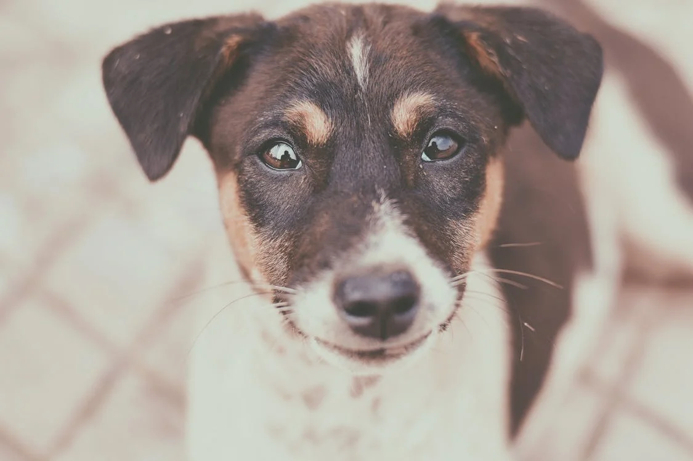
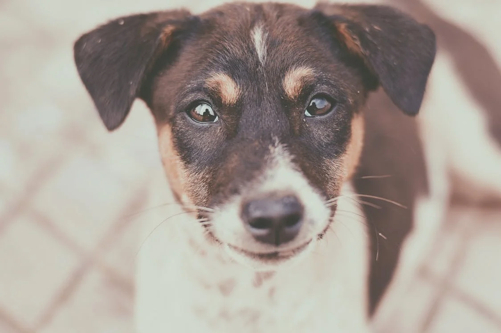

Anjos 4 patas
Transforme vidas: ajude um cão a encontrar um lar!
Ajude-nos a transformar vidas! 🐾❤️
 

Em um mundo onde tantos animais enfrentam o abandono e a negligência, Anjos 4 Patas nasceu da necessidade de oferecer uma segunda chance a cães desamparados. Cada animal que resgatamos tem uma história única – alguns chegam doentes, outros foram vítimas de maus-tratos, e há aqueles que nunca tiveram a chance de experimentar o carinho humano. Mas todos, sem exceção, têm um coração cheio de amor para dar.

como pode nos ajudar?
doações – Qualquer valor faz a diferença para a manutenção do abrigo.
Adoção – Ofereça um lar e uma nova vida para um cãozinho cheio de amor para dar.
Voluntariado – Doe seu tempo e ajude no cuidado e socialização dos animais.